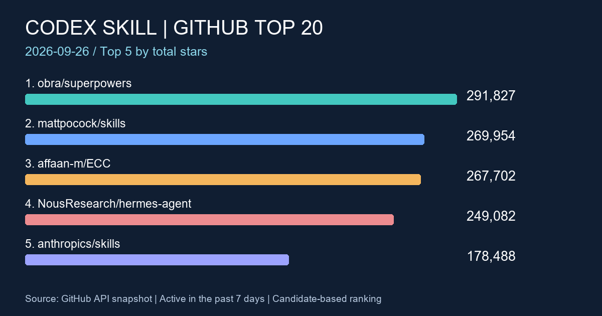

2026-09-26 · GitHub · Codex Skill
GitHub Codex Skill 熱門專案 TOP20
2026-09-26 週報：以 Anysearch 搜尋並由 GitHub 官方資料驗證近七天更新的技能與 Codex 代理相關專案。

前言
本週榜單聚焦可供 Codex 或其他程式代理使用的技能、代理工具與周邊工程專案。排序反映累積 Stars，不代表本週新增 Stars，也不能取代安全與相容性評估。
搜尋條件
- 資料整理日期：2026-09-26（Asia/Taipei）；更新窗口為 2026-09-19T11:10:00Z 至 2026-09-26T11:10:00Z，完整七天以 UTC 判定。
- 使用 Anysearch 的 week 條件搜尋 GitHub 上 Codex Skill、Codex Skills、OpenAI Codex Skill、Agent Skill、Codex agents、Codex plugin 與 Codex automation 候選。code 分類端點回報不可用，故採一般搜尋並排除教學、討論與非 repository 結果。
- 再以 GitHub 官方 Repository API 驗證 stars、forks、主要語言、pushed_at 與 description；原始描述保留原文。繁體中文不是 repository 語言篩選條件。
- 候選必須在描述或 topics 明確對應 Agent Skills、Codex、技能、代理、plugin 或 automation；排除關聯不足的一般 AI 平台。依 stargazers_count 由高至低排列，封存或無法驗證者不列入。
本輪驗證 33 個候選，均符合本次日期與相關性條件，故列出前 20。這是本次可驗證候選集合的排名，不是全 GitHub 的完整普查。
TOP20 排名表
手機可左右捲動表格；原始描述中的成效或數量為作者自述，未經本站獨立實測。
| 排名 | 專案 | Stars | Forks | 語言 | 最近 Push | 原始描述 | 功能簡介 |
|---|---|---|---|---|---|---|---|
| 1 | obra/superpowers GitHub API | 291,827 | 26,120 | Shell | An agentic skills framework & software development methodology that works. | 代理式技能框架與軟體開發方法。 | |
| 2 | mattpocock/skills GitHub API | 269,954 | 22,745 | Shell | Skills for Real Engineers. Straight from my .agents directory. | 工程師技能集合。 | |
| 3 | affaan-m/ECC GitHub API | 267,702 | 39,986 | JavaScript | The agent harness performance optimization system. Skills, instincts, memory, security, and research-first development for Claude Code, Codex, Opencode, Cursor and beyond. | 含技能、記憶與安全機制的程式代理效能系統。 | |
| 4 | NousResearch/hermes-agent GitHub API | 249,082 | 52,844 | Python | The agent that grows with you | 可持續成長的代理工具；GitHub topics 包含 Codex。 | |
| 5 | anthropics/skills GitHub API | 178,488 | 21,121 | Python | Public repository for Agent Skills | 公開 Agent Skills 儲存庫。 | |
| 6 | Shubhamsaboo/awesome-llm-apps GitHub API | 139,810 | 20,539 | Python | 100+ AI Agents, Agent Skills and RAG Apps - Free and Open Source. | AI 代理、Agent Skills 與 RAG 範例集合。 | |
| 7 | farion1231/cc-switch GitHub API | 137,037 | 9,333 | Rust | A cross-platform desktop All-in-One assistant for Claude Code, Codex, OpenCode, OpenClaw, Grok Build & Hermes Agent. Only official website: ccswitch.io | 整合 Codex 等多種程式代理的跨平台桌面管理工具。 | |
| 8 | nextlevelbuilder/ui-ux-pro-max-skill GitHub API | 130,736 | 13,895 | Python | An AI skill that provides design intelligence for building professional UI/UX across multiple platforms. | 為多平台 UI/UX 設計提供知識的 AI skill。 | |
| 9 | openai/codex GitHub API | 126,547 | 19,751 | Rust | Lightweight coding agent that runs in your terminal | OpenAI 的終端程式代理。 | |
| 10 | Graphify-Labs/graphify GitHub API | 121,544 | 11,711 | Python | Turn any codebase, with its docs, SQL schemas, configs, and PDFs, into a queryable knowledge graph. A /graphify skill for Claude Code, Cursor, Codex, and Gemini CLI: local deterministic AST parsing, every edge explained, no vector store. | 為 Codex 等工具建立可查詢的本機程式知識圖譜。 | |
| 11 | JuliusBrussee/caveman GitHub API | 107,895 | 6,253 | Go | 🪨 why use many token when few token do trick. Viral skill + proxy for coding agents that cuts 65% of tokens by talking like a caveman. | 以精簡表述降低程式代理 Token 使用量的 skill 與 proxy。 | |
| 12 | addyosmani/agent-skills GitHub API | 99,169 | 10,415 | JavaScript | Production-grade engineering skills for AI coding agents. | 面向 AI 程式代理的正式工程技能集合。 | |
| 13 | nexu-io/open-design GitHub API | 98,139 | 11,387 | TypeScript | 🎨 Best DeepSeek Harness Design Plugin. The open-source Claude Design alternative. 🖥️ Local-first desktop app. 🖼️ Your coding agent becomes the design engine: prototypes, landing pages, dashboards, slides, images & video — real files, HTML/PDF/PPTX/MP4 export. 🤖 Claude Code / Codex / Cursor / DeepSeek Harness / OpenCode & 20+ CLIs via BYOK. | 讓 Codex 等程式代理協助產出設計資產的本機優先工具。 | |
| 14 | thedotmack/claude-mem GitHub API | 94,720 | 8,375 | TypeScript | Persistent Context Across Sessions for Every Agent – Captures everything your agent does during sessions, compresses it with AI, and injects relevant context back into future sessions. Works with Claude Code, OpenClaw, Codex, Gemini, Hermes, Copilot, OpenCode + More | 跨工作階段保存與注入代理上下文的記憶工具。 | |
| 15 | Leonxlnx/taste-skill GitHub API | 90,244 | 6,147 | JavaScript | Taste-Skill - gives your AI good taste. stops the AI from generating boring, generic slop | 改善程式代理設計輸出品質的 skill。 | |
| 16 | bytedance/deer-flow GitHub API | 82,993 | 11,491 | Python | An open-source long-horizon SuperAgent harness that researches, codes, and creates. With the help of sandboxes, memories, tools, skill, subagents and message gateway, it handles different levels of tasks that could take minutes to hours. | 長時間任務用的開源 SuperAgent harness，整合工具、技能與子代理。 | |
| 17 | stablyai/orca GitHub API | 78,601 | 5,140 | TypeScript | Orca is the ADE for working with a fleet of parallel agents. Run any coding agent with your own subscription. Available on desktop, mobile and remote runtime. | 用於平行程式代理的開發環境，topics 包含 Codex。 | |
| 18 | ruvnet/ruflo GitHub API | 73,305 | 8,700 | TypeScript | 🌊 The original agent harness. Deploy intelligent multi-player swarms, coordinate autonomous workflows, and build conversational AI systems. Features adaptive memory, self-learning intelligence, federation, vector RAG integration, and native Claude Code / Codex / Hermes and many more Integrated | 具原生 Codex 整合的多代理協作與工作流程 harness。 | |
| 19 | career-ops-hq/career-ops GitHub API | 72,849 | 13,693 | JavaScript | Open-source AI job search: scan job portals, evaluate listings into a structured A-H report with a global 1-5 score, tailor your CV, track applications — runs locally in your AI coding CLI (Claude Code, Codex, OpenCode, Antigravity…) | 可在 Codex 等本機 AI coding CLI 執行的求職流程工具。 | |
| 20 | colbymchenry/codegraph GitHub API | 72,105 | 4,625 | C | Pre-indexed code knowledge graph, auto syncs on code changes, for Claude Code, Codex, Gemini, Cursor, OpenCode, AntiGravity, Kiro, CoPilot, and Hermes Agent — fewer tokens, fewer tool calls, 100% local | 支援 Codex 的本機預索引程式知識圖譜。 |
觀察重點
- superpowers、skills 與 ECC 位居前段，工程方法、技能集合與代理效能工具持續累積關注。
- Codex 周邊從純 SKILL.md 擴展到知識圖譜、跨工作階段記憶、平行代理與設計產出工具，導入時應依實際工作流程分層評估。
- 本週 openai/codex、Graphify 與 Codegraph 都在榜內；前者是代理本體，後兩者偏程式理解與知識索引，目的與風險不同。
MIS／技術人員注意項目
- 先在測試專案固定版本驗證；檢閱 SKILL.md、安裝腳本、授權、外部下載與更新機制，避免直接對正式環境套用。
- OA／PROD 分別檢視網路、Proxy、服務帳號、離線依賴與資料傳送範圍。標示跨平台不代表已驗證 Windows、PowerShell 與企業 GPO 環境。
- 記憶、索引與平行代理工具先確認保存位置、保留期限與刪除方式；以去識別化資料試行，並保留人工審核關卡。
- Stars 可作研究入口，不能當成安全審核或採購依據；尤其含自動執行、權限提升或雲端同步的工具，應先走既有變更流程。
本週變化簡述
比較已發佈的 2026-09-19 週報快照：
- obra/superpowers：288,665 → 291,827 Stars（+3,162）。
- mattpocock/skills：265,507 → 269,954 Stars（+4,447）。
- affaan-m/ECC：262,457 → 267,702 Stars（+5,245）。
- NousResearch/hermes-agent：247,020 → 249,082 Stars（+2,062）。
本期新增入榜：anthropics/skills。名單差異同時受到候選集合、相關性條件與七天 Push 窗口影響，不能直接解讀為新專案或單週人氣增減。
結語
建議從可量測的單一用途開始，例如本機程式知識查詢或技能文件產出；確認權限、資料流、維護責任與復原方式後，再決定是否擴大導入。
資料來源與時間提醒
來源：Anysearch 搜尋與各列 GitHub 原始 Repository／GitHub Repository API。可下載 本次欄位快照；即時 API 資料可能已改變。
Stars、Forks 與最近 Push 時間會隨 GitHub 即時變動，此頁保留本次整理結果。